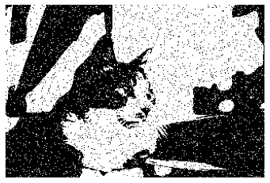
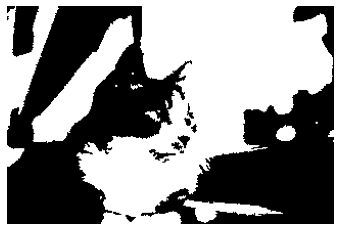
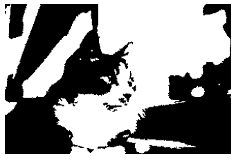

Belief Propagation#
Reference: https://qiita.com/clientver2/items/06b87aca1ac72bae3ea1
import cv2
import numpy as np
import matplotlib.pyplot as plt
from skimage.filters import threshold_otsu
from skimage.transform import resize
from tqdm import tqdm
!wget "https://www.pakutaso.com/shared/img/thumb/tomcat1582_TP_V.jpg"
--2022-01-06 00:33:20-- https://www.pakutaso.com/shared/img/thumb/tomcat1582_TP_V.jpg
Resolving www.pakutaso.com (www.pakutaso.com)... 180.235.251.31
Connecting to www.pakutaso.com (www.pakutaso.com)|180.235.251.31|:443... connected.
HTTP request sent, awaiting response... 200 OK
Length: 346458 (338K) [image/jpeg]
Saving to: ‘tomcat1582_TP_V.jpg.3’
tomcat1582_TP_V.jpg 100%[===================>] 338.34K 1.82MB/s in 0.2s
2022-01-06 00:33:20 (1.82 MB/s) - ‘tomcat1582_TP_V.jpg.3’ saved [346458/346458]
def add_noise(binary_image):
flags = np.random.binomial(n=1, p=0.05, size=binary_image.shape)
noise = flags * (1 - 2 * binary_image)
return binary_image + noise
raw_image = cv2.imread("tomcat1582_TP_V.jpg", 0)
resize_factor = 0.2
output_shape = tuple(s * resize_factor for s in raw_image.shape)
raw_image = resize(raw_image, output_shape)
binary_image = (raw_image > threshold_otsu(raw_image)).astype(np.int8)
noise_image = add_noise(binary_image)
plt.gray()
plt.imshow(noise_image)
plt.axis('off')
plt.show()

class Node:
_alpha = 10.0
_beta = 5.0
def __init__(self, id):
self.id = id
self.neighbor = []
self.message = {}
self.prob = None
def add_neighbor(self, node):
self.neighbor.append(node)
def init_message(self):
for neighbor in self.neighbor:
self.message[neighbor] = np.ones(2)
def marginalize(self):
prob = np.ones(2)
for message in self.message.values():
prob *= message
self.prob = prob / np.sum(prob)
def send_message(self, target):
neighbor_message = 1.0
for neighbor, message in self.message.items():
if neighbor != target:
neighbor_message *= message
compatibility_0 = np.array([1, np.exp(-self._beta)])
compatibility_1 = np.array([np.exp(-self._beta), 1])
message = np.array([np.sum(neighbor_message * compatibility_0),
np.sum(neighbor_message * compatibility_1)])
return message / np.sum(message)
def calc_likelihood(self, value):
if value == 0:
likelihood = [1, np.exp(-self._alpha)]
else:
likelihood = [np.exp(-self._alpha), 1]
self.message[self] = np.array(likelihood)
class MRF:
def __init__(self):
self.nodes = []
self.node_ids = {}
def add_node(self, node_id, node):
self.nodes.append(node)
self.node_ids[node_id] = node
def get_node(self, node_id):
return self.node_ids[node_id]
def belief_propagation(self, num_iters=20):
for node in self.nodes:
node.init_message()
for t in tqdm(np.arange(num_iters)):
for node in self.nodes:
for neighbor in node.neighbor:
neighbor.message[node] = node.send_message(neighbor)
for node in self.nodes:
node.marginalize()
def generate_belief_net(image):
height, width = image.shape
network = MRF()
for node_id in range(height * width):
network.add_node(node_id, Node(node_id))
dy = [-1, 0, 0, 1]
dx = [0, -1, 1, 0]
for h in range(height):
for w in range(width):
node = network.get_node(width * h + w)
for k in range(4):
h_dy, w_dx = h + dy[k], w + dx[k]
if h_dy >= 0 and h_dy < height and w_dx >= 0 and w_dx < width:
neighbor = network.get_node(width * h_dy + w_dx)
node.add_neighbor(neighbor)
return network
network = generate_belief_net(noise_image)
height, width = noise_image.shape
for h in range(height):
for w in range(width):
node = network.get_node(width * h + w)
node.calc_likelihood(noise_image[h, w])
network.belief_propagation()
100%|██████████████████████████████████████████████████████| 20/20 [03:11<00:00, 9.58s/it]
output = np.zeros(noise_image.shape)
for h in range(height):
for w in range(width):
node = network.get_node(width * h + w)
p0, p1 = node.prob
if p1 > p0:
output[h, w] = 1
plt.imshow(binary_image)
plt.axis('off')
plt.show()
plt.imshow(noise_image)
plt.axis('off')
plt.show()
plt.imshow(output)
plt.axis('off')
plt.show()
 
